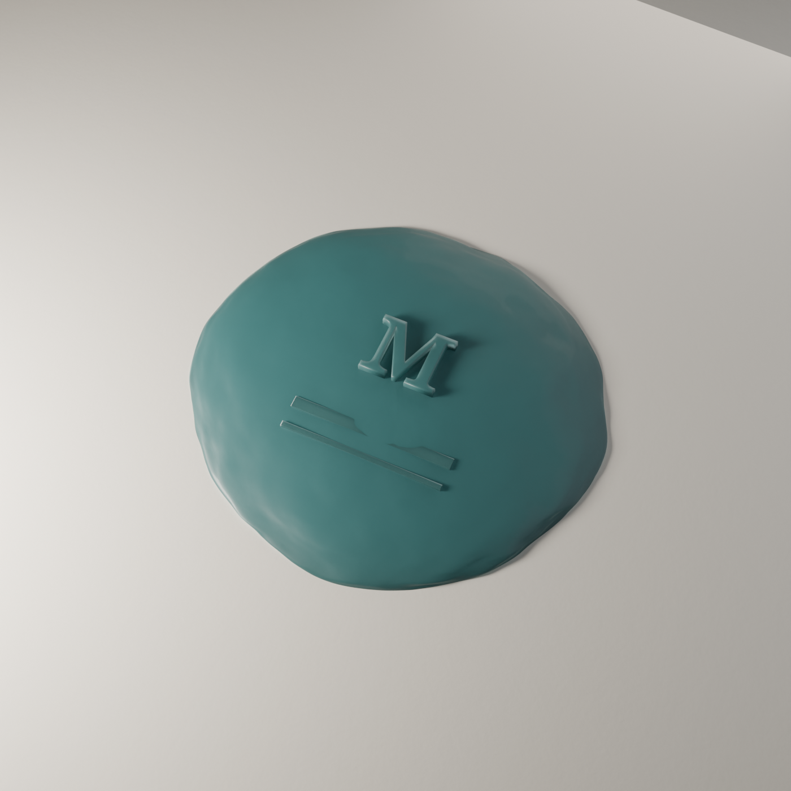
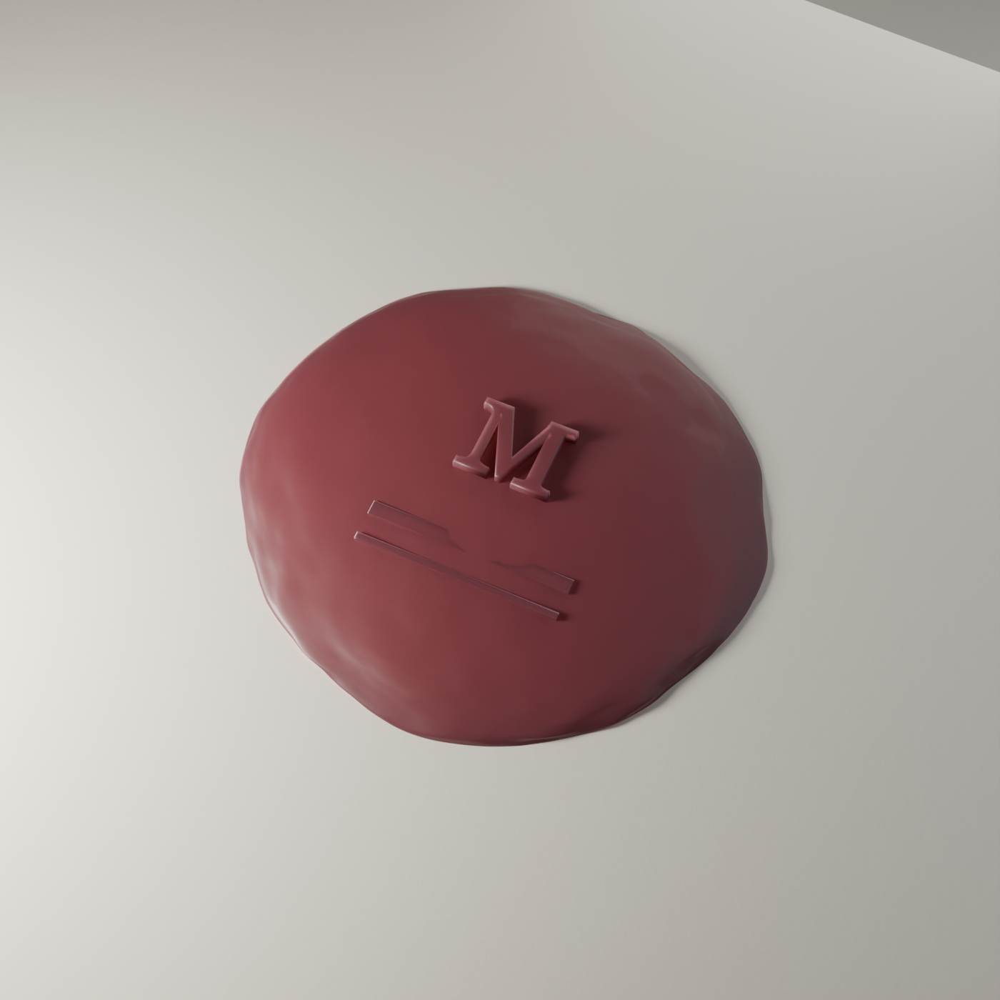
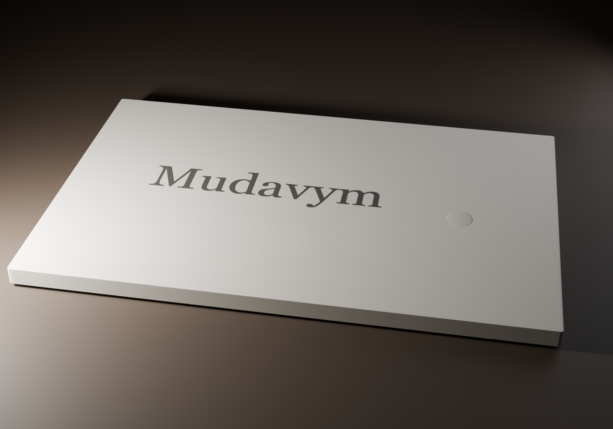
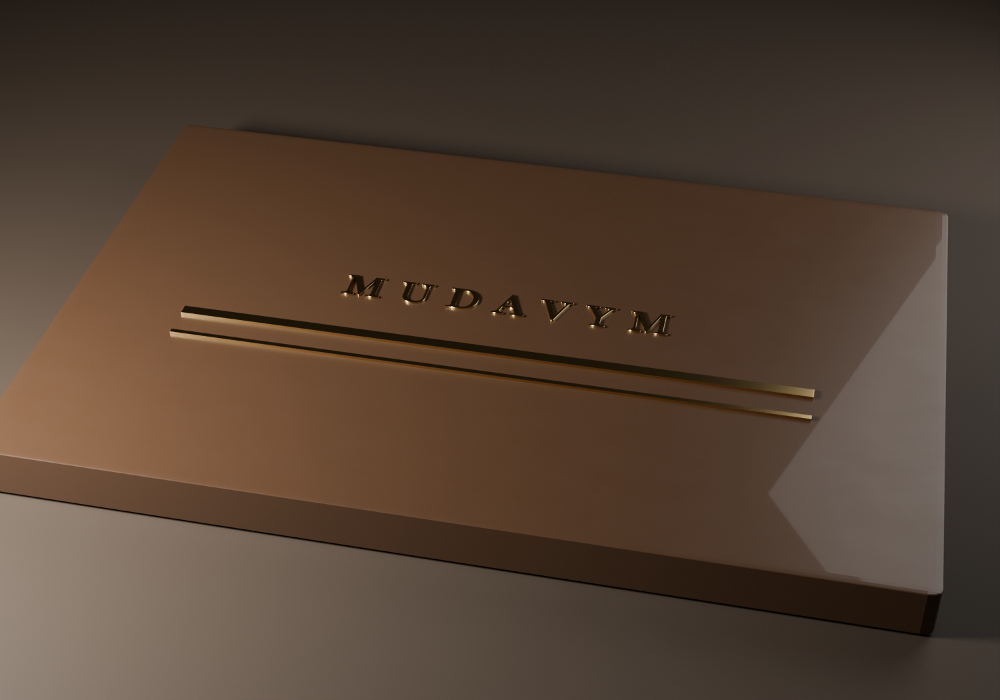
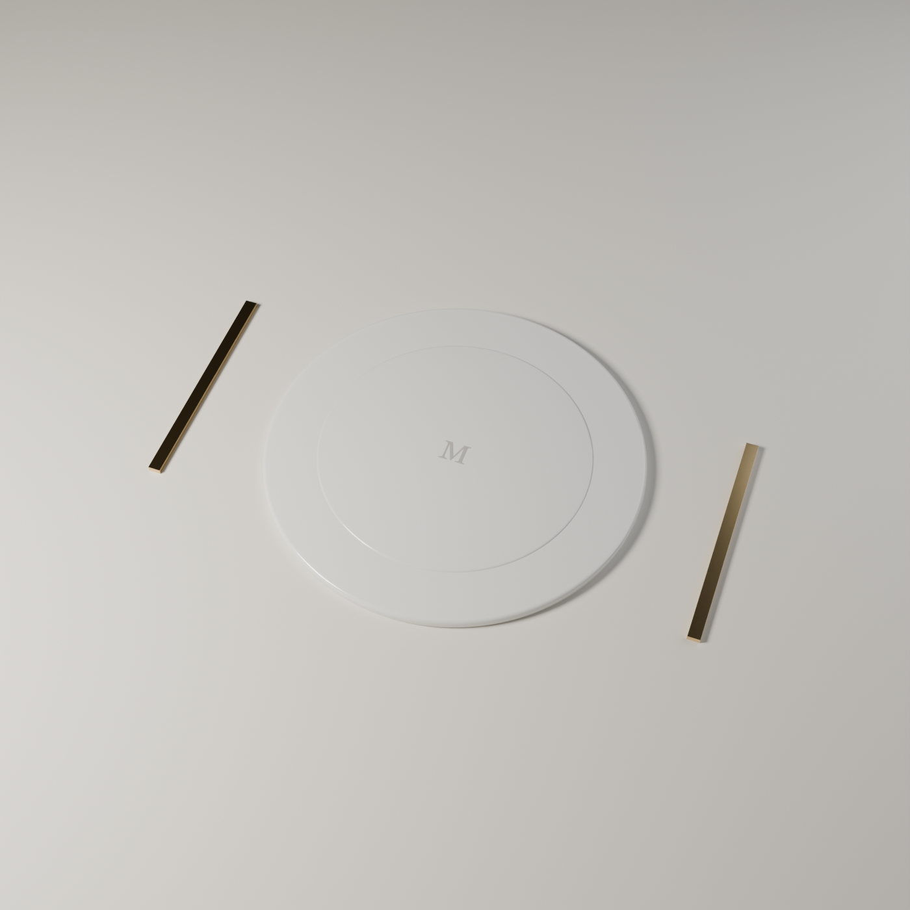
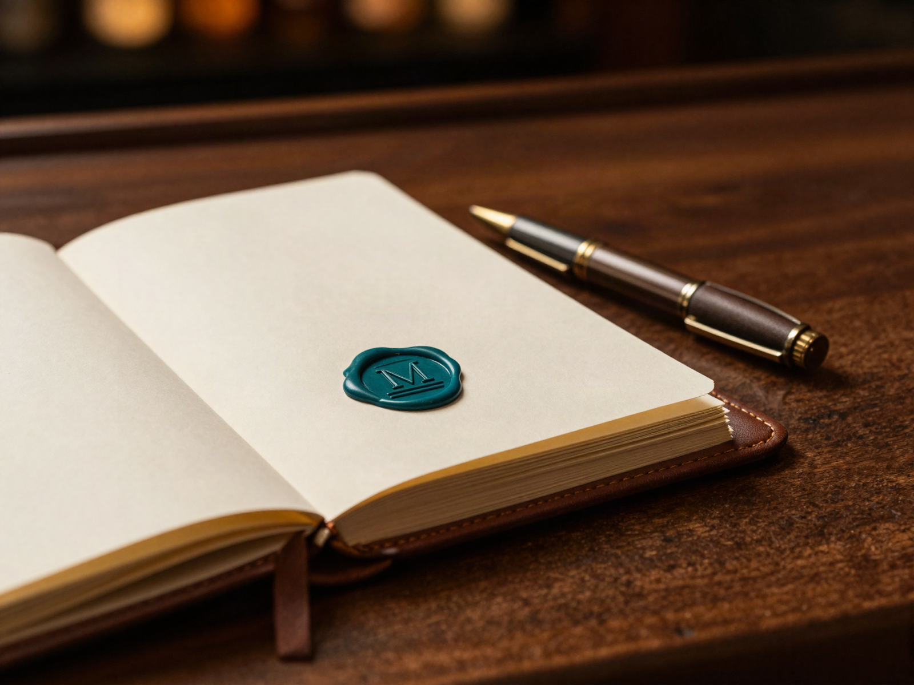
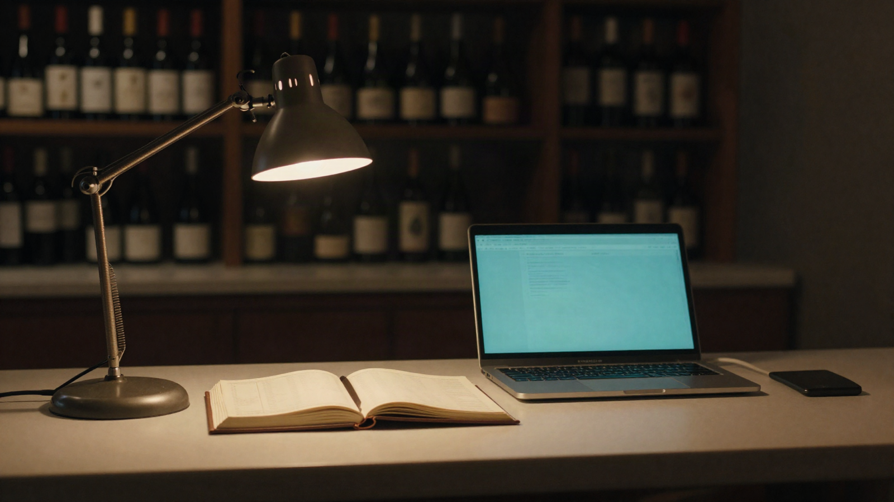

Mudavym · OD-106 · Blender + generated renders · sketch, not production
Eleven renders in the third dimension
Every PNG this directory ships, on the board — six marks rebuilt in Blender
(Cycles) after the founder's "these are super simple put more effort", three scenes
generated where the renderer could not reach, and two superseded renders from the first pass,
kept only so the comparison can be made. Each mark belongs to one of the five direction boards
(077–081); most feed the synthesis board 083. Captions describe what is actually in frame —
where a render falls short of its own description in
notes.md, the caption says so.
The six rebuilt marksBlender 5.2.1 · Cycles/Metal · 220–280 samples · denoised
Framing computed from subject width and lens FOV rather than eyeballed; subsurface
wax, brushed anisotropic metal, porcelain, and object-space paper noise. Method and the full
list of declared shortcomings: notes.md.

The Seal — teal081 The Ledger → 083. Wax pressed with the serif M over the double rule, in a candidate seal colour. The colour question is open; this is a candidate, not a decision.The two rules press faint — they read as scored lines rather than the confident double rule of the wordmark.

The Seal — oxblood081 The Ledger → 083. The identical press, identical light, deep oxblood — so the colour decision is judged on one object and not on two photographs.

The Full Stop081 The Ledger → 083. The wordmark printed in matte ink, its full stop debossed into the stock under one hard raking light — the only lighting in which a deboss exists at all.The deboss sits well clear of the word and is round and oversized, so it reads as a separate dot rather than as the wordmark's full stop; the stock reads as a solid slab, not cotton paper.The Meter078 The Instrument — the one element kept from that board. Five bars, four brushed steel and one brass: the logo obeying the chart rule, grayscale data with chroma reserved for the anomaly.The silhouette reads as a valley, not as an M — the letterform the mark is named for is not legible at this framing.

The Double Rule081 The Ledger → 083. Brass inlaid in a slab — the rule that closes a ledger column, as an object rather than a border.notes.md calls this a dark slab; it rendered warm tan. The walnut also reads glossier than wood should and its grain is absent — the object-space noise fix applied to the paper was never applied here.

Set the Table079 The Cellar → 083. "Set the table. We'll keep the books." — porcelain and the two rules laid as cutlery.The linen has no visible weave (same missing noise fix), and the M engraved in the plate is barely legible at this exposure.
Three generated sceneshiggsfield z_image · 0.15 credits each · 0.45 total
Paper tooth, real wax and a real room — three things Cycles did not give us at this
budget. Generated, not rendered: treat them as mood evidence, not as brand assets.

The ledger at closing timegeneratedA teal wax seal bearing a serif M, set on the page of an open ledger. Unprompted, it reached for the 083 register — İznik teal wax on warm paper.notes.md says it drew the 083 lockup "exactly"; the M is there, but the two rules beneath it are not legible in the render.The press, mid-contactgeneratedThe brass stamp at the moment of contact, wax still wet and beaded at the rim — hold-to-approve made physical. The reference for 080's one-tap/hold-to-approve interaction.

Back office, after servicegeneratedA warm-charcoal room with exactly one teal glow in it — the laptop. This became the evidence behind the founder's Warm Charcoal #15130F dark-ground decision.
Two superseded — the first passkept only until the comparison has been seen
These are the renders the founder called "super simple". They are on the board so the
rebuild can be judged against them, and for no other reason. Do not cite them as marks.
The Seal, first passsuperseded081 The Ledger. Superseded by seal-teal.png / seal-oxblood.png.The camera sat 1.9 units from a subject needing 6.3, so the seal arrives as a macro of one letter: no paper is in frame, the surface reads ceramic rather than wax, and the M is a thin scratch across a dome.The Ember, first passsuperseded079 The Cellar — candlelight as attention semantics: the one glowing thing in the dark is the next decision. No rebuilt counterpart exists; the idea did not survive into the six.A smooth primitive under one light — the premise is legible, the object is not a brand mark.